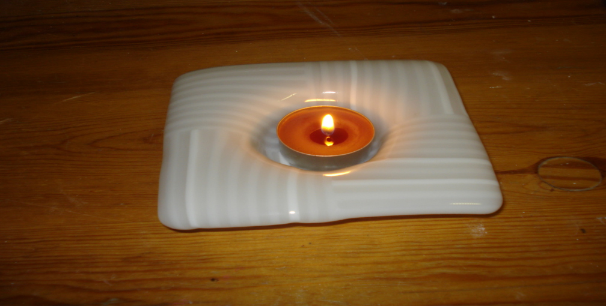

|
|
Glas smältning är formgivningning av glass i glas- eller keramikugnen
Syftet av dessa sidor är attt leda til glas fusing.
Området är vid men fascinerande.
Var och en måste söka sin stig och sina intresseområden.
Jag har försökt att jämna trösklar som nybörjaren möter,
men bara din egen erfarenhet kan trampa stiget jämn.
Mitt i texten finns vägskyltar, dvs.
(länkar) till andra sidor eller andra sajter som vägleder till djupare
eller till nån sevärdhet.
Sidorna är delade i två grupper-
DEL 1
en översiktig Inlednings Tour
OSA 2 Kartboken
som illutrerar ämnen i större dedtalj.
Dessutom finns det en
English Menu
Några nyttiga sidor på Engelska.
|
|

Talven valoa Winter Light
|
Copyright 2007,2011 Lauri Levanto
URL http://lauri.lsd.dk/lasi/
Sivuja saa kopioida sähköisesti tai tulosteina, ehdolla että sivun
copyright lauseke on mukana. Jos kuvan tai tekstiosion yhteydessä on
lähdemaininta tekijästä ja/tai kuvaajasta
on häneltä pyydettävä erikseen lupa.
Kuvissa esiintyvät teokset ovat tekijänoikeuden suojaamia, eikä niitä saa kopioida myyntiin
|
|
{kind=link}